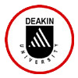

|

My name is Belinda Davey. I am a PhD student at Deakin University, Melbourne, Australia. I am carrying out a research study under the supervision of Assoc. Prof. Ron Gold, of the School of Psychology. The study aims to examine your response to gambling on slot-machines. Participation involves playing a computerized version of a slot-machine, and answering some related questions; this will take no more than 15 minutes. Your time will be reimbursed with a $10 voucher of your choice from various internet sites (e.g. iTunes, e-Bay, Greater Union, Amazon). Participation is voluntary; if you decide not to take part, there will be no negative consequences for you. All responses will be anonymous; your name will not be recorded. However, in order to receive the voucher, you will need to provide a contact email. This email address will not be stored with other information you provide in the study, and it will be deleted once the voucher has been sent to you. You have the option of not receiving the voucher. You may withdraw from the study at any time, until you submit your answers. If you withdraw, your responses will not be used. The data will be kept securely (in a locked filing cabinet) at Deakin University, for 6 years after the publication of any reports or papers arising from the study; the data will then be destroyed. A summary of the final results will be posted on this web page by the end of 2011. There is some risk that your participation may encourage you to gamble. There is a list of contact details at the end of the study for gambling help services in several English-speaking countries. If you have questions regarding this study, please contact:
If you have any complaints about any aspect of the research, the way it is being conducted or any questions about your rights as a participant then you may contact Secretary HEAG-H, Dean's Office, Faculty of Health, Medicine, Nursing and Behavioural Sciences, 221 Burwood Hwy, Burwood, VIC 3125, Telephone: (03) 9251 7174, Email hmnbs-research@deakin.edu.au Note that by completing and submitting the questionnaire you are consenting to take part. |